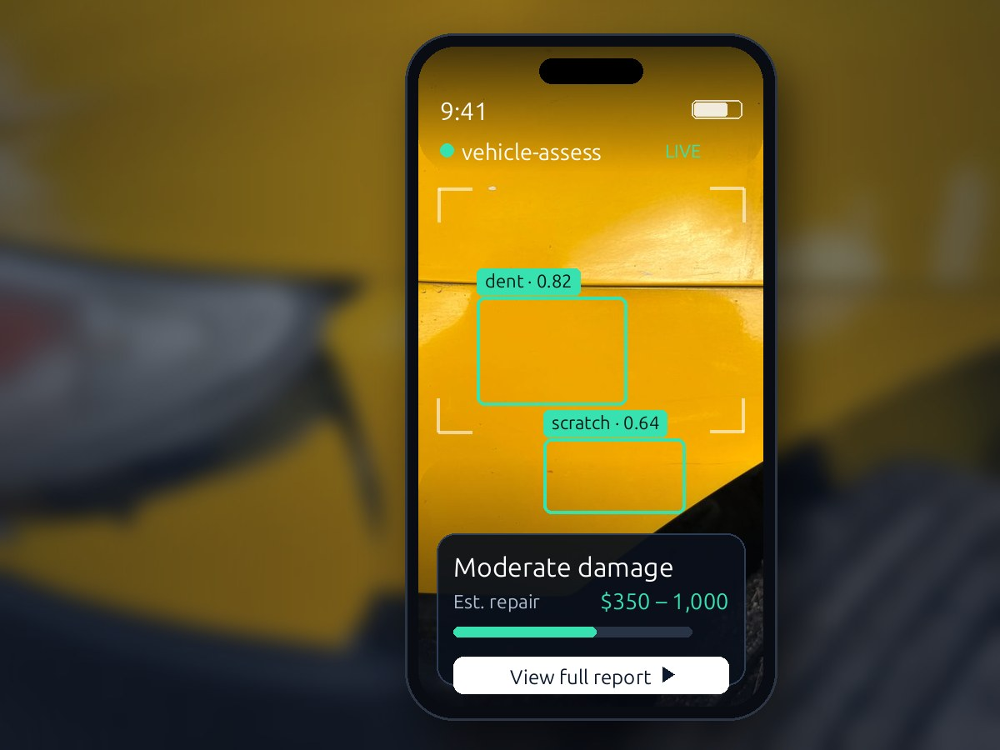
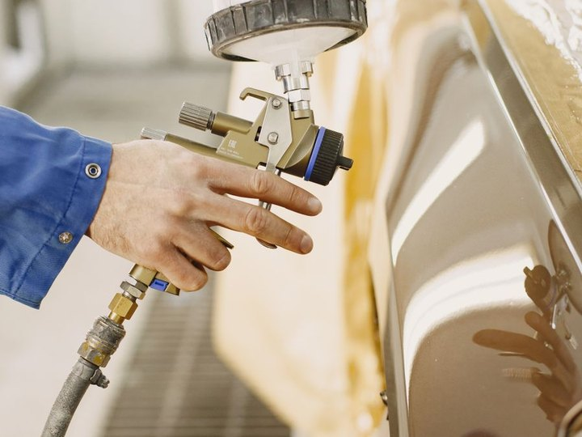
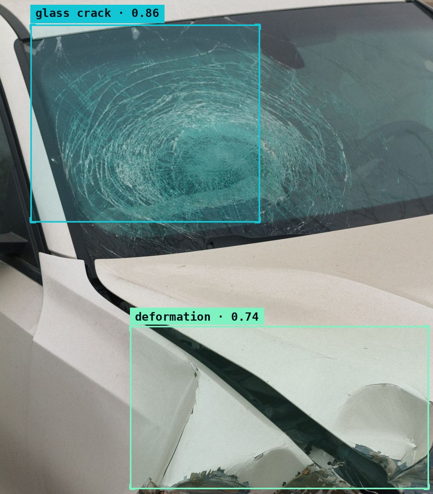

Superbuyer builds computer-vision and image-processing software for the automotive and insurance industries — software that reads a vehicle photo, understands the damage, and returns an assessment you can act on.

Built for the businesses that assess vehicles every day

Collision RepairNo special hardware, no manual measuring. An ordinary image goes in; a clean, structured assessment comes out — in seconds.
Snap or upload a photo from any phone or camera. Our pipeline handles real-world lighting, angles and clutter — no studio setup required.
Computer-vision models locate and classify each region of interest, scoring severity and confidence the way a trained inspector would — only instantly and consistently.
You get back a structured result — a labeled damage list, an overall severity, and a repair-cost range — ready to drop straight into your estimating, claims or operations tools.

We combine computer vision, image processing and machine learning into software that takes an image in and returns a decision out — structured, fast, and ready to plug into your workflow.
Detection, segmentation and classification that turn raw pixels into structured insight — locating, labeling and scoring what matters in every image, even in messy real-world conditions.
Pipelines that clean, enhance and measure images — extracting the data hidden in every frame and standardizing it so downstream estimation and inspection always work from the same baseline.
Models that improve with your data, delivered as clean REST APIs — so AI vision drops straight into the tools your team already uses, with results in a format they already understand.
Computer-vision software that reads a vehicle photo and returns a structured damage assessment — built on Superbuyer's automotive roots. It gives collision, inspection and claims teams a consistent, instant first read on every vehicle.
POST /assess → 200 OK { "num_damages": 2, "overall_severity": "moderate", "estimated_repair_usd": { "low": 350, "high": 1000 }, "damages": [ { "label": "dent", "severity": "moderate", "confidence": 0.81 }, { "label": "scratch", "severity": "minor", "confidence": 0.64 } ] }
Superbuyer turns slow, subjective, manual visual work into fast, consistent software your team can trust.
Turn an image into a structured assessment instantly — no waiting on a manual review to get the first answer.
The same criteria applied the same way, every time — removing the subjectivity that makes manual visual work hard to scale.
Results arrive as clean JSON over a simple API, ready to drop into the estimation, claims or operations tools you already run.
We believe AI vision should be practical — software that solves real problems for the businesses people rely on every day.
We build computer-vision software that helps automotive and insurance businesses see more, decide faster, and operate smarter — replacing slow manual visual work with software they can rely on.
Starting with vehicle damage assessment, Superbuyer aims to become a trusted provider of AI vision for the automotive and insurance industries — and to grow, step by step, into a broader platform for practical AI-powered solutions.
Whether you run a body shop, a dealership, or an insurance operation, we'd love to explore how Superbuyer's AI vision can work for you. Reach out and our team will get back to you within one business day.